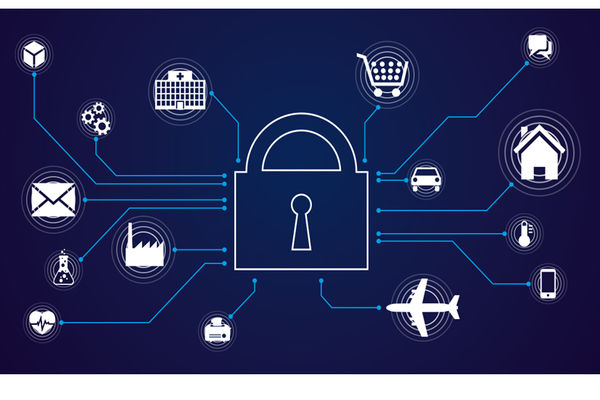
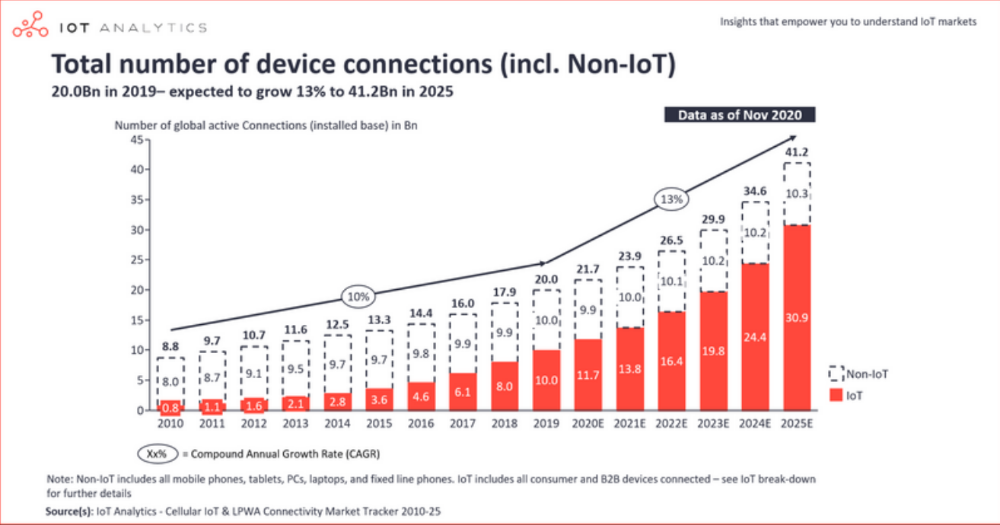
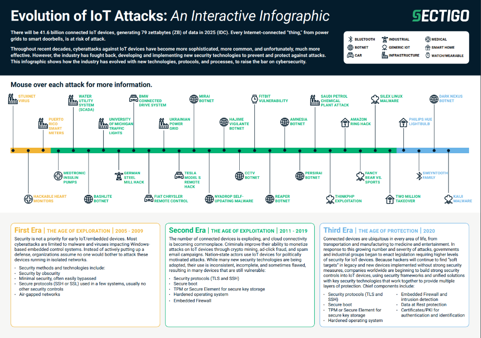

Mary 24, 2023

Les objets connectés font de plus en plus partie de notre quotidien. Des plus courants et "anciens" comme le téléphone ou le gps aux plus récents comme les balances, les serrures ou même les défibrilateurs, ils s'intègrent toujours de façon plus discrète à notre environnement. Cet aspect de discretion apporte son lot d'avantages, mais favorise également l'ignorance globale des risques liés à ces objets. Chaque objet connecté représente une faille de sécurité potentielle, et rien de moins sûr qu'un coffre fort avec de nombreuses ouvertures.
Les objets connectés peuvent être considérés comme l'interaction du monde physique qui nous entoure et du monde "digital". Ils trouvent leur application dans le monde professionnel (serrures, imprimantes, caméras) mais aussi chez les particuliers (enceintes, ampoules, smart home). Leur présence accroît chaque jour, comme on peut le voir sur la figure suivante.

En 2018 en France, les objets connectés pour le grand public représentaient 1,1 milliard d'euros. En 2022, aux Etats-Unis, d'après Deloitte, il y avait environ 22 objets connectés par maison.
Du fait de l'omniprésence des objets connectés ainsi que de leur nombre, les potentielles menacent et portes d'entrée pour un attaquant se sont multipliées au cours des dernières années. De plus, leur présence dans des milieux professionnels fait que ces vulnérabilités peuvent avoir des conséquences désastreuses.
La sécurité est composée de plusieurs aspects :
- La protection de données personnelles
- La protection des données échangées
- L'authentification
- L'intégrité du système (défaillances, interruption de service ou perte de contrôle).
D'après l'OWASP (Open Web Application Security Project) les failles les plus courantes sont :
- Mot de passe faible
- Réseaux non sécurisés
- Manque de possibilité de mise à jour
- Utilisation de composants dépassés
- Stockage et transfert de données non sécurisés (83% des transactions sont effectuées en plain text et non en SSL d'après le World Economic Forum)
De plus, une conséquence directe de la popularité des objets connectés est le fait qu'il n'y a pas de budget alloué à la sécurité afin de proposer des prix compétitifs.
Pour preuve du nombre de vulnérabilités, voici une représentation des attaques récentes par Sectigo.

Ces attaques ont mené à une prise de conscience récente, et des mesures ont été mises en place afin de gérer les nombreuses contraintes liées à la sécurité des objets connectés. D'après Statista, en France, le budget alloué à ce domaine est passé de 92 à 158 millions d'euros entre 2017 et 2020, et devrait atteindre 378 millions en 2025. D'après un sondage de PSA-Certification, un organisme de certification spécialisé dans la cybersécurité, 9 personnes sur 10 considèrent que la sécurité fait partie du top 3 des aspects les plus importants pour leur entreprise et 83% des gens s'intéressent au degré de sécurité des produits qu'ils achètent.
Cependant WEF estime toujours un manque de 3 millions d'experts en sécurité dans le monde.
Aujourd'hui, de nombreuses ressources en ligne ont été mises en place afin de pouvoir suivre les actualités en terme de détection de failles de sécurité des objets connectés. (cf. rapport méthodologique de veille)